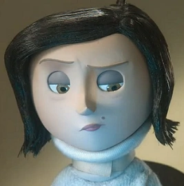

Mel Jones

Aunque está muy ocupada con su trabajo
como editora de catálogos de jardinería, Mel ama mucho a Coraline
a pesar de la falta de tiempo y atención que le da a su hija, como
se muestra cuando Coraline le dijo que casi se cae a un pozo. Como
madre, se preocupa profundamente por su hija e incluso trató de
compensarla diciéndole a Coraline que podía elegir algo que le
gustara en la tienda de comestibles, pero estaba muy consternada
cuando Coraline todavía estaba molesta con ella y lo negó.